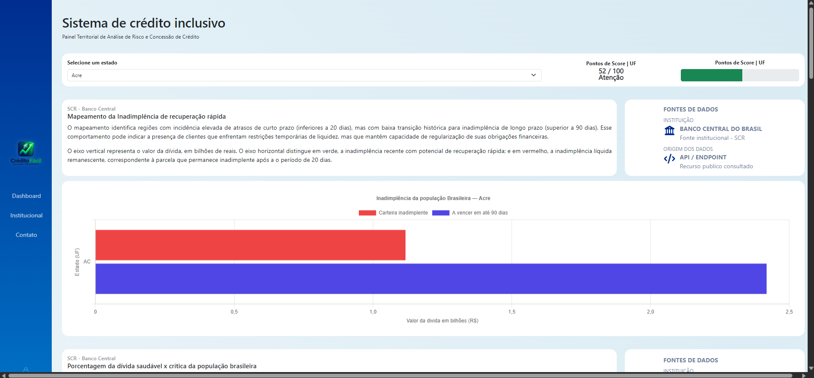

Karina Martins Molina
Cursando Desenvolvimento de Software Multiplataforma na FATEC São José dos Campos, 1º semestre.
Sobre mim
Profissional em início de carreira em TI, com experiência em desenvolvimento de sistemas e suporte no atendimento de chamados. Sou esforçada, organizada e comprometida, valorizo a aprendizagem contínua e busco executar cada tarefa com atenção e qualidade. Tenho facilidade para trabalhar em equipe e interesse em aprimorar minhas habilidades técnicas.
Objetivos acadêmicos
Aprofundar de forma contínua meus conhecimentos técnicos em programação e arquitetura de software, buscando dominar novas ferramentas para criar soluções inovadoras e eficientes.
Objetivos profissionais
Atuar como Desenvolvedora de Software, aplicando e expandindo minhas habilidades técnicas para construir aplicações eficientes, colaborar ativamente com a equipe e contribuir com o sucesso dos projetos da empresa.
Projetos Acadêmicos (API)
EndiviDados: Crédito Inclusivo - 1º semestre/2026
Projeto acadêmico desenvolvido em equipe | FATEC Profº Jessen Vidal – São José dos Campos | DSM – 1º Semestre/2026
Empresa parceira
Cliente: Professor Fernando Masanori Ashikaga (FATEC São José dos Campos)
Descrição do projeto
O Crédito Fácil é uma aplicação desenvolvida para apoiar a análise territorial de risco de crédito, utilizando dados econômicos e sociais de fontes públicas para identificar regiões com diferentes níveis de vulnerabilidade, inadimplência e capacidade de pagamento.
O projeto foi desenvolvido como parte da disciplina de Aprendizagem por Projeto Integrado (API) do curso de Desenvolvimento de Software Multiplataforma (DSM), seguindo a metodologia ágil Scrum.
A solução utiliza dados provenientes de fontes como Banco Central do Brasil (BCB), IBGE e outras bases públicas, transformando esses dados em indicadores e visualizações por meio de um dashboard interativo. A proposta é fornecer informações que possam auxiliar na tomada de decisões relacionadas à concessão de crédito de forma mais inclusiva e responsável.
Tecnologias utilizadas
- Python
- Flask
- Pandas
- SQL / MySQL
- HTML5
- CSS3
- Google Colab
- Docker
- Git/GitHub
- AWS EC2
- Gunicorn
- Linux/Ubuntu
Minha contribuição no projeto
Atuei como integrante do Dev Team, participando de diferentes etapas do projeto, desde o planejamento das funcionalidades e definição da interface até a configuração, integração e implantação da aplicação.
- Participação na criação das User Stories (US) do backlog do produto e definição dos respectivos critérios de aceitação;
- Elaboração do mockup da interface, buscando transformar os dados processados no Google Colab em uma apresentação simples e acessível ao usuário;
- Ajustes e integração dos códigos utilizados no Google Colab para processamento e apresentação dos dados;
- Participação na integração entre o processamento dos dados, o backend Flask e a interface da aplicação;
- Configuração e implantação do ambiente de execução do projeto em AWS EC2;
- Configuração do ambiente Ubuntu, Python, Docker e MySQL na EC2;
- Configuração do Gunicorn e systemd para executar o backend Flask como um serviço no servidor Linux;
- Configuração do acesso externo à aplicação por meio de Elastic IP e Security Group;
- Atualização do projeto na EC2 utilizando Git/GitHub;
- Investigação e correção de um problema de autenticação na comunicação entre o backend Flask e o MySQL;
- Realização de testes para validar o funcionamento da API e sua comunicação com o banco de dados;
- Gravação dos vídeos de demonstração do sistema implantado.
Metodologia de trabalho
O projeto foi desenvolvido em equipe utilizando a metodologia ágil Scrum, com organização do trabalho em 3 sprints.
As funcionalidades foram planejadas por meio do backlog do produto e divididas em User Stories (US), com critérios de aceitação e tarefas definidas para cada etapa.
Para o desenvolvimento e controle das versões, utilizamos Git e GitHub, seguindo uma estratégia de branches composta por main, deve branches específicas para cada funcionalidade. As alterações eram submetidas por meio de Pull Requests e revisadas por outros integrantes da equipe antes da integração ao código principal.
O trabalho foi realizado de forma colaborativa, com divisão de responsabilidades entre os integrantes do Dev Team e acompanhamento da evolução das funcionalidades ao longo das sprints.
Repositório

Projetos Profissionais
Estágio em TI - Sistemas
Empresa
Santa Casa de São José dos Campos
Período
07/07/2025 - 31/12/2025
Contexto
Atuação principalmente na área de Projetos e Desenvolvimento de Sistemas, com desenvolvimento e manutenção de soluções internas utilizadas pelas equipes da instituição. Durante o estágio, também tive contato com as áreas de Infraestrutura e Data Center.
Principal projeto - Portal Multidisciplinar
Desenvolvimento de um portal multidisciplinar voltado para as equipes de Fisioterapia e Fonoaudiologia, com o objetivo de facilitar a organização e o acompanhamento dos atendimentos dos pacientes.
As informações dos pacientes e dos atendimentos foram organizadas em tabelas e apresentadas em um painel, permitindo que a equipe visualizasse de forma mais clara os dados pessoais, o status dos atendimentos e outras informações necessárias para o acompanhamento dos pacientes.
Durante o desenvolvimento, realizei validações com os profissionais envolvidos para verificar se os requisitos estavam sendo atendidos e identificar novas informações que poderiam ser incorporadas ao portal.
Atividades realizadas
- Desenvolvimento e manutenção de sistemas internos com PHP, JavaScript, HTML e CSS;
- Desenvolvimento do Portal Multidisciplinar para Fisioterapia e Fonoaudiologia;
- Criação de tabelas, painéis e extensões de portais para organização dos dados e atendimentos;
- Consultas e validações no banco de dados Oracle;
- Correção de bugs e realização de testes;
- Validação e levantamento de requisitos junto aos profissionais da instituição.
Tecnologias utilizadas
- PHP
- JavaScript
- HTML
- CSS
- Oracle
- DataTables
Contribuições pessoais
Minha principal contribuição foi o desenvolvimento do Portal Multidisciplinar, desde a organização das informações até a criação das tabelas e funcionalidades utilizadas pela equipe para acompanhar os atendimentos dos pacientes.
Jovem Aprendiz - Tecnologia da Informação
Empresa
Santa Casa de São José dos Campos
Período
05/01/2029 - 15/09/2026
Contexto
Atuação em diferentes atividades da área de Tecnologia da Informação, incluindo suporte a chamados internos, organização e rotatividade de chamados na Central Única de Atendimento e, principalmente, participação em projetos e desenvolvimento de sistemas.
Principal projeto - Portal Multidisciplinar de Serviço Social
A partir da experiência adquirida durante o desenvolvimento do Portal Multidisciplinar de Fisioterapia e Fonoaudiologia, desenvolvi uma solução semelhante para a área de Serviço Social, que também fazia parte da equipe multidisciplinar.
O portal foi desenvolvido seguindo uma lógica semelhante de gerenciamento e acompanhamento dos atendimentos, organizando as informações em tabelas para facilitar a visualização pela equipe.
Uma das principais melhorias foi a integração de informações que anteriormente eram consultadas em dois portais diferentes, reunindo-as em um único portal para facilitar o acesso e o acompanhamento das informações pela equipe de Serviço Social.
Durante o desenvolvimento, participei de reuniões com a equipe de Serviço Social para validar as funcionalidades e verificar se o portal atendia às necessidades dos profissionais.
Atividades realizadas
- Participação no desenvolvimento e manutenção de sistemas internos;
- Desenvolvimento de tabelas e extensões de portais;
- Suporte a chamados internos relacionados a sistemas;
- Atuação na Central Única de Atendimento, organizando e direcionando chamados;
- Validação de funcionalidades e requisitos junto aos profissionais da instituição.
Contribuições pessoais
Minha principal contribuição foi aplicar a experiência adquirida no desenvolvimento de sistemas para criar o Portal Multidisciplinar de Serviço Social, reunindo informações de diferentes portais em uma única solução e facilitando o acompanhamento dos atendimentos pela equipe.
Projetos Pessoais
vou adicionar
Informações Curriculares
Formação acadêmica
- Desenvolvimento de Software Multiplataforma - FATEC São José dos Campos (em andamento)
- Curso Técnico em Desenvolvimento de Sistemas (integrado com ensino médio) - técnico pela Proz Educação (concluído, 2 anos)
Cursos complementares
- Inglês Avançado - Kumon | Estágio L (C1)
- Matemática - Kumon
- Robótica - Alpha Lumen
- Python - Senai
Habilidades técnicas
- Linguagens e desenvolvimento: Python, PHP, JavaScript, HTML e CSS
- Banco de dados: Oracle e MySQL
- Frameworks e bibliotecas: Flask, Pandas e Bootstrap
- Ferramentas e tecnologias: Git, GitHub, Docker, Google Colab, Visual Studio Code e AWS
- Sistemas operacionais: Linux/Ubuntu (em aprendizado)
- Desenvolvimento web: criação e manutenção de sistemas, APIs e interfaces web
- Outras competências: consultas SQL, integração entre sistemas, versionamento de código, testes e suporte a sistemas
Palestras e eventos
4º Encontro Dassault Systèmes de Mulheres em STEAM
Ano: 2025
Local: Café Journal Moema – São Paulo/SP
Participei do encontro para representar as meninas da minha escola que participavam do curso de Robótica, realizado em parceria com o Instituto Alpha Lumen. A experiência proporcionou contato com iniciativas voltadas à participação feminina nas áreas de Ciência, Tecnologia, Engenharia, Artes e Matemática (STEAM).
Encontro Meninas em STEAM – Embraer
Ano: 2025
Local: Embraer – São José dos Campos/SP
Participei do encontro por meio do Instituto Alpha Lumen, voltado ao incentivo da participação de meninas nas áreas de Ciência, Tecnologia, Engenharia, Artes e Matemática (STEAM), conhecendo experiências e oportunidades relacionadas a essas áreas.
Newton in a Box – Boeing
Ano: 2025
Local: SJK Airport – São José dos Campos/SP
Participei de uma experiência educacional voltada à aviação e às áreas STEM, com atividades práticas relacionadas à engenharia e à aerodinâmica. Entre as experiências, participei de um simulador de voo e de atividades que demonstravam, de forma prática, conceitos de Física, Engenharia e Matemática aplicados à aviação.
Durante o evento, também fui entrevistada pelo jornal NT Vale para compartilhar minha experiência e falar sobre a participação na atividade.